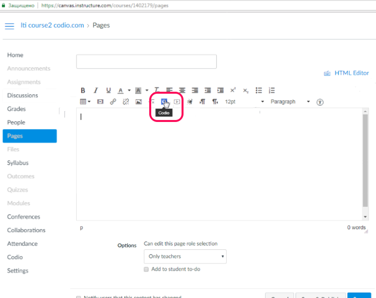
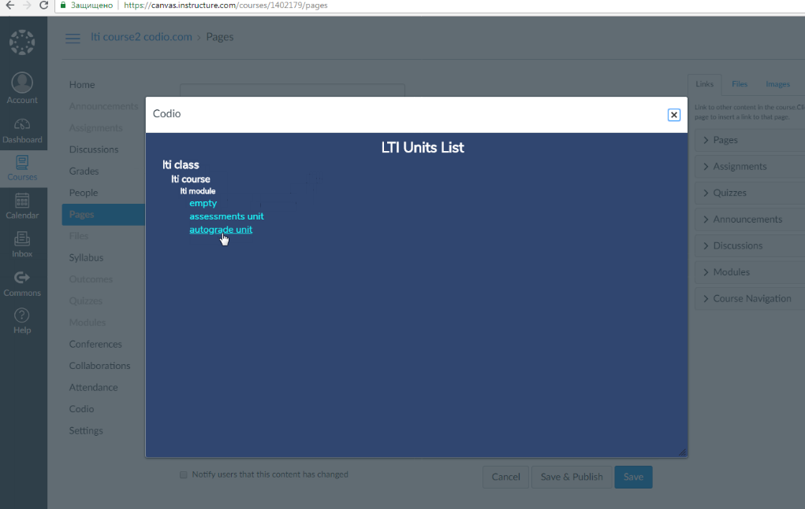

Codio LTI App¶
The Codio LTI App allows an easy way to integrate Codio with supported LMS systems.
Video - Connect Codio to Canvas using the LTI App:
Please note the steps below are for implementation in Canvas.
For details of other supported systems see https://www.eduappcenter.com/tutorials.
Preparation¶
The following steps need to be taken only one time per course.
In Codio¶
Go to your organization account settings by clicking on your user name in the bottom left of your dashboard and then selecting your organization within My Organizations.
Select the LTI Integrations tab.
Scroll down to the LTI Integration 1.0 section. You should see the following fields. Remain on this screen for the time being.

In Canvas¶
The Canvas user who carries out these steps must be a system administrator.
Create a new Course in your LMS system. We suggest you create a test course called Codio Test Course before you do it with a production course.
Select the Course.
Click on Settings in the left set of options.
In the top links, select Apps.
Click the large button View App Configurations.
Click on the View App Center button.

Navigate (or filter) to find the Codio app, select and + Add App
In Codio and Canvas¶
We will now copy the following global integration fields from Codio to Canvas.
LTI Consumer -> Consumer Key
LTI Secret -> Shared Secret
and select the Add App button to confirm. You should then have something similar to this:

Course LMS URL¶
The Course LMS URL is used to map an LMS course to a Codio course. It ensures that Codio knows how to redirect students back to the correct course should they attempt to access the course through the Codio dashboard. If not entered and students log into Codio to try to start new assignments there will be no link for them to click to be passed to your LMS Course.
The LMS user who carries out these steps does not need to be a system administrator but must have suitable privileges to edit courses and assignments.
Video - Course LMS URL:
In Codio, go to the Admin tab near the top.
Select Edit Details in the bottom of the page.
Near the bottom is a switch Enable LTI which you should enable.
Below this is an empty field Course LMS URL. Switch back to your LMS and make sure you are on the Home page of the course. Copy the url in the address bar of your browser to the clipboard and paste it into the above mentioned field in Codio.

Mapping Codio assignment to Canvas assignment¶
The Assignment URL is where you map each individual assignment within your Codio course to the corresponding assignment in your LMS.
Where you have enabled the Codio LTI App in your LMS system, you can easily integrate assignments from your Codio course.
Go to your Canvas Course and to Pages to add a new page,
Click the Codio icon that will be available

A list of the Codio course contents will be shown, simply select the assignment(s) you wish to add to Canvas and Save

The assignment(s) and course will need to be published before students will be able to access them